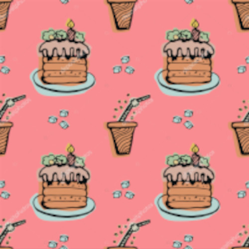

Dentre as áreas mais abrangíveis eu gosto mais da:
Matemática.
Os símbolos mais utilizados: ® ™ Δ ¢ € ¥ £ ↑ ↓ ©
😀 💖

Ali em cima meu favicon!
Já estou separando o site em níveis de texto.
Endereço:
Rua Jardim Cristovam, 91000A matemática é incrível.
A matemática é uma arte
A matemática é necessária.
A matemática é incrivel
A matemática é uma arte
A matemática não é chata
A matemática é eficiente
x2+2x-3=0
C6H12O6
printf("Digite um número:\n ");
scanf("%d",&num);
if(num%2==0)
printf("Este numero é par");
else
printf("Este número é ímpar");
No meio de tanta dificuldade, existe uma oportunidade.
, Albert Einstein
Siga a citação da autora Carol Dweck:
Ao mesmo tempo, os cientistas estão percebendo que as pessoas têm maior capacidade
Estou estudando HTML
Olá, tudo bem
Hoje eu:
Compras
Jogos Favoritos